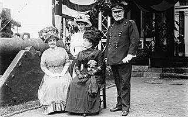

The U.S. Army Corps of Engineers drew up the plans and supervised the work. It oversaw a bulkhead construction to surround the area of reclaimed land: the island's south shoals. The fill came from two sources over the next ten years: dredging Buttermilk Channel to enable warships to enter the former creek; and the excavation of the Lexington Avenue subway line in Manhattan. An estimated 4.8 million cubic yards of fill was used behind a seawall 7,219 feet in length. The Army manpower that worked on the landfill was readily available: prisoners from Castle Williams. The project was completed in 1912, bringing the island 103 new acres of land. A lighthouse was installed on the new southern tip of the island.

The original 'army wives' with Gen. Grant, 1911 (LOC)
The Army assigned a colorful leader during this era. The commanding general of the island was Brigadier General Frederick Dent Grant (1850-1912), the eldest son of President Ulysses S. Grant. General Grant held the post beginning in 1904; he resided in Building 20 with his wife. The couple hosted elaborate garden parties on the island, attended by New York society types. Grant also greeted the many aviation pioneers who used the island as a practice field, including Wilbur Wright in 1909.
The lead up to World War I was a tense time in New York, and on the island. As soon as the United States declared war on Germany on April 6, 1917, soldiers from Governors Island were put into action. Shortly after 3:30 a.m., just minutes after war had been declared; small raiding parties of soldiers from the 22nd Infantry Regiment boarded Coast Guard ships and sped across New York Harbor in the darkness. Without firing a shot, the men seized all ships of the Hamburg-American and North German Lloyd lines, and took the German crews to Ellis Island in handcuffs.
Starting in 1917 more than 70 new buildings were hastily constructed. Most of these occupied what is today South Island Field and Picnic Point, south of Division Road. The island soon had 30 million square feet of new storage space for war materiel and troop housing. Five new miles of roads were constructed and the Governors Island Railroad was inaugurated. The GIRR ran over eight miles of narrow-gauge track, using steam locomotives and freight cars to move goods around the island. The railroad operated around the clock as it supplied the Doughboys with food, weapons and ammunition to bring to France.
Following World War I, debate concerning the future of the island began anew. Proposals to sell the island were put forth within the military, as it was no longer valuable as a fortified site, and both military personnel and civilians considered the warehouses that covered a large portion of the island an eyesore. An anarchist's bomb explosion in front of the Sub-Treasury building on Wall Street in 1920 prompted the Chamber of Commerce of the State of New York to call for a permanent garrison on the island, with at least a full regiment of infantry for the "safety, welfare, and dignity of the City."
In the late 1920s and early 1930s the Army began its last major building campaign. New barracks, offices and a hospital went up within the historic district during this period to replace temporary structures from World War I. Many of these are located on the landfill adjacent to the edge of the original shoreline, in a symmetrical arrangement across the center of the island. Work began in 1928 on the "model barracks" which became Liggett Hall, the island's largest building.
During the 1930s, more than 1,500 Works Progress Administration (WPA) workers were employed to demolish the war-time barracks and storehouses, build new roads, plant 1,000 trees, and implement major landscaping improvements. The brick sidewalks and large plane trees lining Hay Road are from this period. The WPA crews repaired docks and buildings, and renovated a number of the older structures, including the Commanding Officer's House (Building 1) and the Governor's House (Building 2). They also repaired the walls of Fort Jay, and replaced Castle Williams' original timber framing system with steel supports and concrete.
Army reorganizations brought the First United States Army to Governors Island in September 1933. The First Army was one of America's most important field armies, fighting in both World Wars. It was stationed on Governors Island from 1933 to 1943, and again from 1946 to 1966. A number of distinguished generals commanded the First Army on Governors Island, including Lt. General Hugh A. Drum, General Omar N. Bradley, and Maj. General Roscoe B. Woodruff, among others.